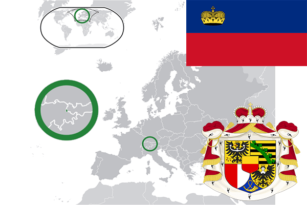

To`liq nomi: Lixtenshteyn knyazligi
Region: Markaziy Yevropa
Qonunchilik shakli: Konstitutsion Monarxiya
Mustaqillik kuni: 1866-yil (Germaniya Ittifoqidan)
Poytaxt: Vaduts
Maydoni: 160 km² (dunyoda 189 -o`rinda )
Chegaradosh davlatlari: Shvetsariya, Avstriya
Aholisi: 37,340 (dunyoda 193 - o`rinda, 2014 -yil roʻyxat)
Aholi zichligi: 227/km²
Aholining o`rtacha yoshi: 79,8 yil (83,4 ayollar,76,2 erkaklar)
Rasmiy tili: Nemis tili
Dini: 76% katolik, 7% protestant
Pul birligi:Shveysariya franki
Telefon prefiksi: +423
Internet domen: .li
Xalqaro tashkilotlarga a`zoligi: BMT (1990 – yildan)
Dengiz va okeanlarga chiqishi: Yo`q
YIM: Butun: $ 5.3 mlrd, Jon boshiga $ 98,432 (2013 - yil roʻyxati)
Yirik shaharlari: Vaduts, Shan